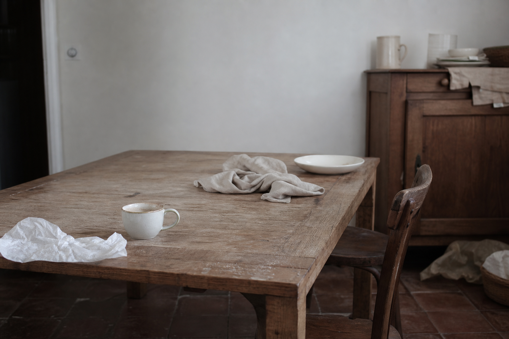
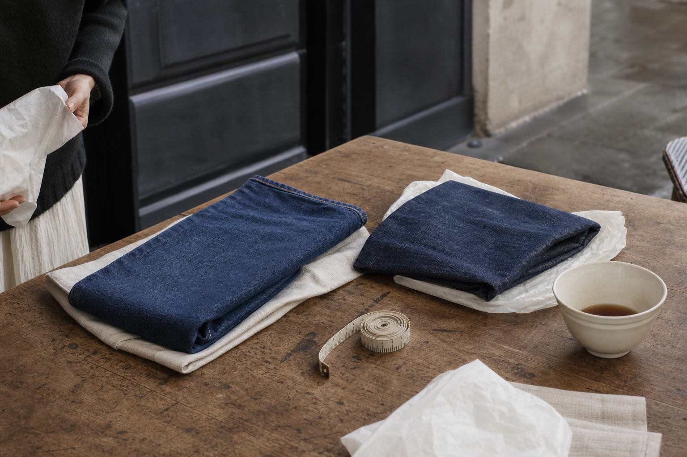
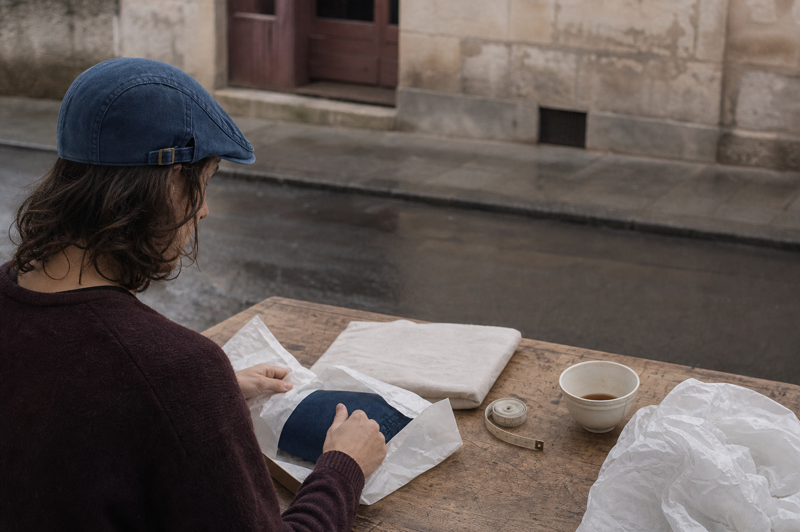
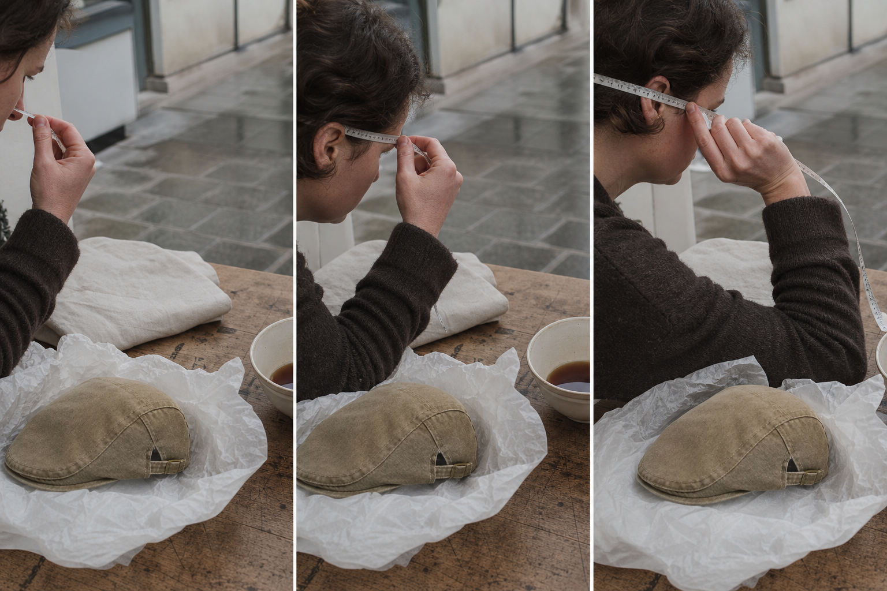
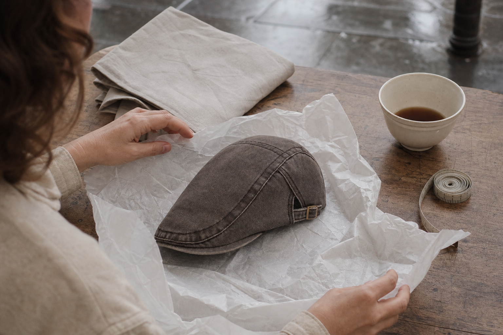
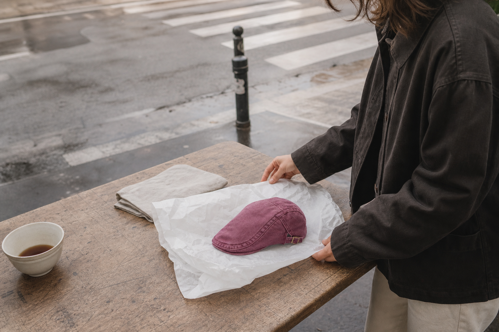

Between two sizes
The smaller one. It wears in, not out.
The Washed Denim Collection
Free delivery in France, and thirty days to send it back. A cap doesn't fit because a number matched. It fits because the shell gave way to his head, and kept giving way, winter after winter.
Size is the word you'd use at the counter. It isn't what you're actually buying him. You're buying the years after: the shape that holds, the seams that don't, the head you never measured.
And here's the part nobody explains before you order. Our denim is washed on the piece, before it's ever cut. The shrinking already happened in the mill. So the cap that arrives is the cap he wears three winters from now, not a size that quietly moves the first time it meets water.
One cut, made to fit. A side-adjuster you set once. A soft shell that ends up shaped like him.
100-Day Fit Guarantee: it sits right, or your money back.

The anomaly
Nothing was worn through. Nothing had failed. It came back anyway, and not by the man it was bought for.
A cap that ends its life from wear takes seasons. The ones that come back take eleven days, still stiff at the seam, still smelling of the box. Nothing gave way. Nothing let go. Somebody just guessed a number.
And the person carrying that parcel back is never the man who unwrapped it. He said it was great. He wore it for the photo. She kept the receipt, because she already knew.
So the third year, she doesn't risk it. She buys a bottle of something instead, safe, sizeless, gone by February. That's the part nobody counts: the gift he'd have worn for four winters, quietly replaced by one he forgets in a fortnight.
Here is what we wanted to understand. Not why the man returned it. Why the size was ever a guess in the first place.
The vocabulary
A flat cap is two parts. Confusing them is how a gift ends up back in your hands.
You are buying a shape you have never held, for a head you have never measured. So learn the two words the trade uses, because everything after this depends on telling them apart.
The shell is the part that covers the skull. Soft on a flat cap, and it is the shell that gives way to a head over the seasons rather than resisting it. The headband is the inner strip, the one in contact with the skin, running the full circumference. That is the part your measurement is about.
So you are not measuring a skull, and not the shell either. You are measuring the line the headband will sit on, just above the ears. Get that line right and the shell has years to settle around it.
Where the cloth comes from
Piece-washed denim: the cloth is washed before it is cut, so the size you pick is the size he keeps.
Raw denim does three things to a man, in order. It sits stiff for a season. It shrinks the first time it meets hot water. Then it slackens somewhere past the point it should have stopped. Buy a gift on that timeline and you are guessing at two different sizes.
Ours is washed on the piece, before a single panel is cut. The retreat happened at the mill, years upstream of his first Sunday wash. What arrives is already lived-in, already settled, already the shape it intends to keep.
That is the part that matters when you are measuring a head you cannot measure. You are not choosing a number that will move. The cloth has finished moving. From here it only gives way to the skull it is worn on, season after season.

What gives way, what holds
Soft shell, one adjuster, set once.
A cheap cap fights the skull it lands on. This one does the opposite: the shell is soft from the first wear, so it takes the shape of the head underneath instead of arguing with it. Season after season, that shape settles rather than slips.
Which is why your margin for error is wider than you think. A shell that moulds forgives a centimetre either way; a stiff one doesn't forgive anything. And the side-adjuster is set once, on his head, by him: it holds through the winters that follow.
One cut, made to fit. What it fits is not a number. It's a head, over years of wear.
100-Day Fit Guarantee: it sits right, or your money back.

Where this cap stops working
The limit of what we make, written down before you pay rather than discovered after.
On 11 March 2026, a customer called us about the XL. It pinched. We asked for his measurement: 61, maybe 61 and a half. Our answer was not an exchange.
Because an exchange would have sent him the same cap again. Past 61 cm the XL stays tight, and a soft shell that moulds to a skull still cannot invent two centimetres it was never cut with. So we said it out loud: at that head measurement, this is not your cap.
That is the one place our sizing gives way instead of holding. If the tape lands past 61 cm, or you are guessing on a head you cannot measure and suspect it runs large, write to help@ashcroft-flatcaps.com before you order. Support answers around the clock. Nothing pushes you to decide today. But an unanswered doubt does not resolve itself between now and checkout.
No. It will sit tight, and sending the same size twice fixes nothing. Email us first.
Write to help@ashcroft-flatcaps.com, 24/7, and tell us what you know about him. We would rather talk you out of a cap than take the order and handle the return.
The measurement
A tailor's tape, a landmark just above the ears, and a number you can trust for years.
You don't need his head in front of you. You need one minute with a tailor's tape while he's in another room.
Lay it flat around the head, just above the ears and across the middle of the forehead. Don't pull it tight. Then do it again. Two readings that agree is what turns a guess into a measurement, and it's the same reading that will still be right four seasons from now, because the cloth was washed before it was cut and the shrinking is already behind it.
Thick hair, or a full cut that holds volume: take the size above. That's not a hedge, it's the same logic as the shell itself. It gives way to the head rather than fighting it.
100-Day Fit Guarantee: it sits right, or your money back. Size exchange stays open.

The rule when you hesitate
Denim gives way at the head. It never grows back.
You measured twice and landed on 57.5. Nothing in the chart says 57.5. So you hover between M and L, and this is exactly where a gift usually goes wrong.
Take M. The smaller number. Washed denim relaxes slightly with wear and never the other way round, so a shell that feels honest on day one becomes his shape by the third season. Go up a size and you get the opposite: a cap that was never quite held, and nothing in the fabric will ever tighten it back.
One condition keeps that true. Hand wash, cold water, dry flat on a bowl turned upside down. No tumble dryer, ever: that is what warps the shell for good.
The smaller one. It wears in, not out.
Then go one size up. That is the only exception.
Hand wash, cold water, press without wringing, dry flat.

The safety net
A mirror tells you nothing a Tuesday morning won't tell you better.
A cap doesn't reveal itself in a hallway mirror in the four seconds before someone says thank you. It reveals itself outside: walking, in wind, on a head that forgets it's wearing something. So that's where we let it be judged. He can take it out, not just stand in front of a glass, and decide afterwards.
If the number was wrong, a size exchange stays open during the return period. Check the posted conditions for the exact window and for where trying it on ends and wearing it begins. That's the part we'd rather you read than take our word for.
And behind all of it, the 100-Day Fit Guarantee: it sits right, or your money back. Not a coin toss. A cap that gives way to a head, with a hundred days to prove it does.
100 days to decide. Size exchange stays open during the return period.
Shipping
The one figure on this page we would rather overstate than undersell.
Everything else here is measured in seasons. This part is the only one you count in days, because you have a date in your head and nobody sells you a cap by telling you the honest end of the range.
Orders leave within 24 to 48 working hours. Delivery in mainland France is stated at 3 to 6 working days after that. Plan on six. One of our four-star reviews is titled exactly that, a little long, six days, product as described. We would rather you read six here and be early than read three and stand at the door.
Free worldwide shipping on every order, no minimum.
Nothing improves by waiting. It simply starts later.
We asked. Size is what stops people buying online, by a wide margin: 57%. Not seeing the fabric comes second at 29%. Having to handle the return, 14%.
And 19% have already thrown a cap out because it scratched or gripped. Not because it was worn through, because it never gave way to the head wearing it.
That is why the tape measure comes before the wash. Everything on this page since the start answers those four numbers, one at a time. 30,000+ satisfied customers later, the pattern hasn't changed: the caps that last are the ones measured twice.
What it costs to keep doing nothing
The maths of a gift is not the price. It is the number of seasons it survives.
You have skipped this gift twice already. That has a cost too, and it is paid every year in something forgettable bought instead.
Three cheap caps thrown out inside a year cost more than one kept four years. The cheap ones go because they scratched or gripped: 19% of people in our 2026 survey say that is exactly why a cap left their shelf. Sizing at that end of the market is guesswork printed on a label. Washed denim that has already shrunk before cutting has nothing left to hide, and a shell that gives way to a head does not become the wrong size in month three.
Nothing is urgent here. But he still will not have bought it for himself next winter.
Divide it by the seasons it gets worn rather than by the shelf it came from. One cap that sees four winters is the cheaper line on the page.
Because the fabric was washed on the piece before it was cut, so the shrink already happened in the mill. A number printed over unwashed cloth is a number that changes after the first wash.

Before you order
Five answers, in the order they usually arrive.
These are the messages that reach help@ashcroft-flatcaps.com the week before a gift, not the week after a mistake. Someone is holding a tape measure, hesitating, and would rather ask than guess. Support answers around the clock, seven days a week.
None of it is urgent. But the answers don't change if you wait, and neither does the fact that he still hasn't bought one for himself.
Write to us before you order. The XL runs to 61 cm and past that it sits tight. We would rather tell you now than process two returns later.
A size exchange stays possible during the return period and it's the request we treat first, because it's the one we get most. The conditions shown at checkout give the exact terms.
Yes, outside, not just in front of a mirror. A flat cap is judged on a pavement, not in a hallway. See the posted conditions for where trying on ends and wearing begins.
By hand, cold water, dried flat. Never a tumble dryer. The soft shell holds the shape it has taken from his head, season after season, as long as heat never touches it.
It sits right, or your money back. A hundred days is long enough for a cap to go through real wear, not a fitting.
Where the investigation lands
Measured twice, shrunk long before it reaches him, and a limit we told you about ourselves.
Nothing here is urgent. But nothing improves on its own either: next winter he still won't have bought this for himself, and you'll be back to the bottle of something.
The measuring is done. The denim already shrank in the piece. The side-adjuster gets set once and holds. What's left is choosing the wash and letting the seasons do what they do.
100-Day Fit Guarantee: it sits right, or your money back. Size exchange stays possible during the return period, per the posted conditions.